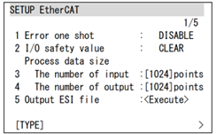
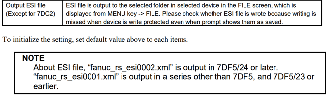
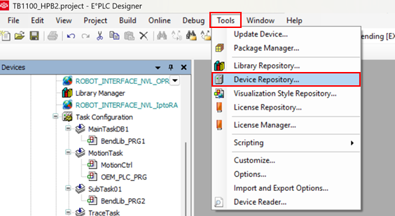
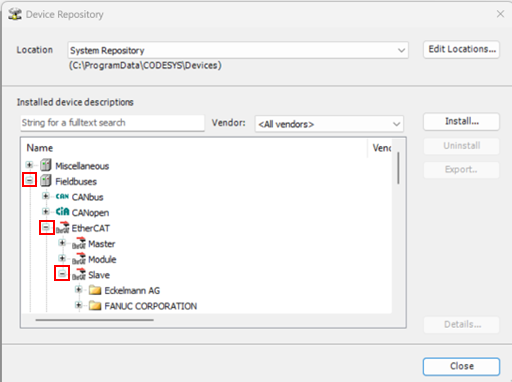
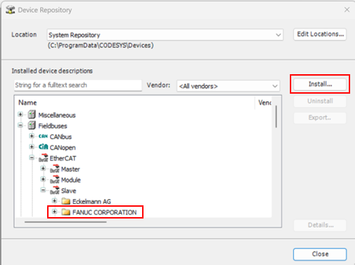
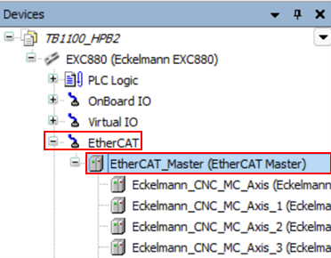
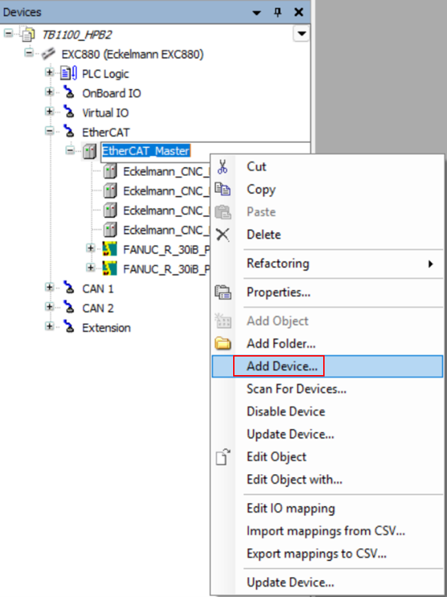
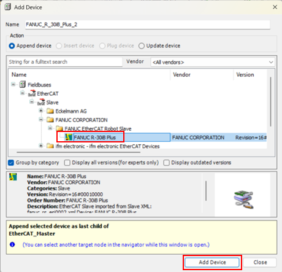
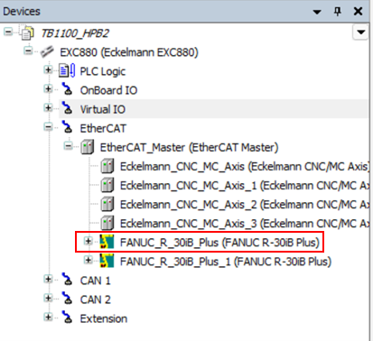
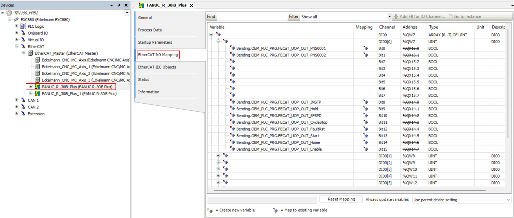

EtherCAT Interface
This document contains details about the EtherCat interface between RA control and FANUC Robot with EtherCat slave function.
EtherCAT Digital Interface
-
The Signal Interfaces & Description image in the Hardware IO chapter shows the universal robot interface signals avalilable in RA Control, to interface with the robot. These signals provide basic operation of Robotic bending with RA control.
-
These IO’s are to be mapped to the EtherCat IO mapping in the codesys interface.
-
To enable/communicate the RA controller with Fanuc Robot, the ESI file from the robot is loaded into the EtherCat interface as slave node.
Downloading ESI file from the FANUC Robot
-
Navigate to Menu → Setup → EtherCAT, you will see the following screen.

-
Select option Output ESI File to <Execute>. The “fanuc _rs_esi0002.xml” is saved in the selected folder.

-
This file can be imported in to the Codesys environment to add the FANUC robot as slave node.
Adding FANUC Robot as slave node in Codesys Environment
-
Open the Codesys environment with RA control project file.
-
Navigate to Tools → Device Repository, the Device repository window opens.

-
In Device Repository expand FieldBuses → EtherCAT → Slave, you can find list of available slave devices. Now click on Install button and navigate to the folder where the ESI file is stored and select the file and click on OK.


-
Once Installed, the file is shown in tree menu of slave as shown above. Now click on close button to close the Device Repository window.
-
Navigate to EtherCAT → EtherCAT_Master, in the Devices Menu.

-
Right click on the EtherCAT_Master, to open the tab as shown and navigate to Add Device option.

-
Add Device window appears, here under Fieldbus → EtherCAT → FANUC ETHERCAT ROBOT SLAVE the Robot’s slave can be found.
-
Click on the + symbol to access the device as shown. Select the device and click on the Add Device button to add the device as the last node of the ETHERCAT Master - Slave.

-
The device is added as shown below.

EtherCAT IO Mapping
-
Double click on the added fanuc slave node, the slave configuration window opens, Navigate to EtherCAT I/O Mapping option. Here all the available bytes are shown and the tags can be mapped according to the IO assignment done in the Robot.

| Here the IO’s apart from the standard interface is also mapped, in case of FANUC robot the UOP’s and the GI/GO’s are also mapped in this menu based on the asignment done in the robot’s end. The interface sequance follows the same procedure as the Digital IO interface mentioned in the previous topic. |